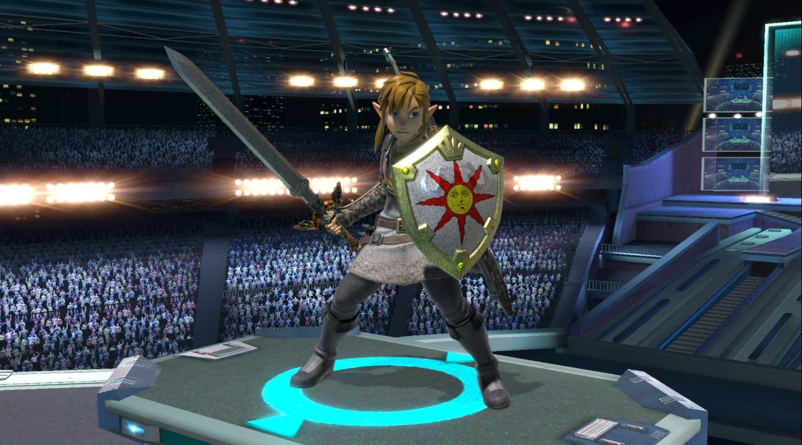
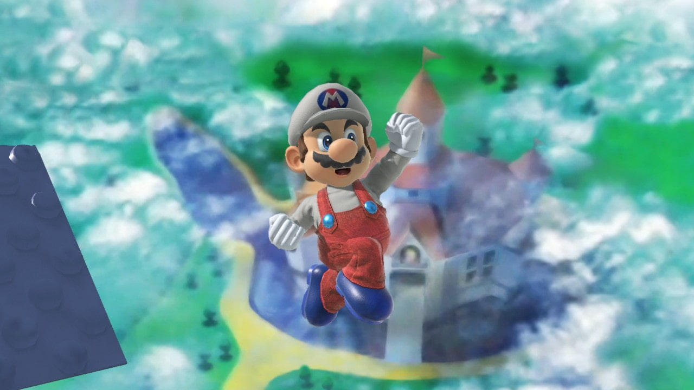

Modelling
Switch Modding und Mods erstellen
Dieses Thema hat nicht direkt mit dem Beruf zu tun, jedoch ist es auch sehr kreativ und hat mir einiges übers Programmieren beigebracht. Um die Charaktermodelle zu bearbeiten musste ich zuerst meine Nintendo Switch hacken und danach die Charakterfiles aus dem Spiel exportieren. Dazu musste ich zuerst meine Switch hacken und lernte viel, was ich auch im Programmieren für die Website später benutzen konnte. Das Ganze machte ich mit einer Anleitung, die ich online gefunden habe. Ich konnte alle Spielfiles direkt aus dem Spiel herausnehmen. Als ich die PNG der Charaktermodelle auf meinem PC gespeichert hatte, musste ich sie nur noch umfärben. Dies machte ich Mithilfe von Clip Studio Paint und dem Wissen, dass ich mir in den Malkursen geholt hatte.
Danach musste ich einen neuen Ordner erstellen und die originalen PNG's mit meinen ersetzen. In Super Smash Studio konnte ich eine Vorschau des Modells sehen, um zu schauen wie es im Spiel aussehen würde.

Das neu erstellte Modell konnte ich dann im Spiel sehen. Ich erlernte ausserdem wie man Stages, Soundeffekte und Musik im Spiel verändert. So erstellte ich zum Beispiel auch einen Swisscom Mario, den Sie unten sehen können. Zuerst machte ich das Ganze nur in Super Smash Brothers, doch danach wagte ich mich an andere Spiele wie Guilty Gear und modete dort meine eigene Skins. Nach der Lehrstelle möchte ich versuchen meine Fähigkeiten aus Blender zu benutzen um eigene Modelle zu kreiren, die ich in Smash benutzen kann.
 